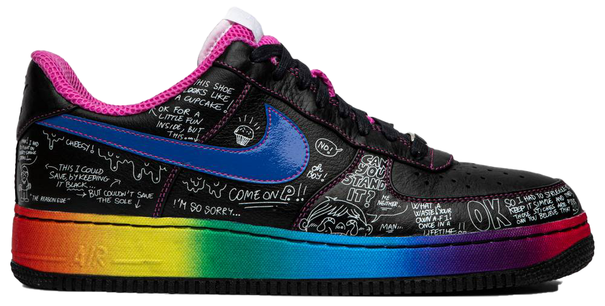
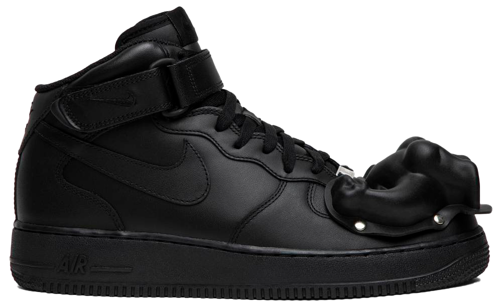

Colette x Air Force 1 Low Supreme 'Busy P'
In 2008, Nike dropped the 1World collection, consisting of 18 pairs of Air Force 1s created by 18 different influencers around the world. The Colette x Air Force 1 Low Supreme ‘Busy P’ was created by Busy P, also known as Pedro Winter, a French DJ and producer who managed Daft Punk from 1996 to 2008 and went on to own Ed Banger Records. The limited edition shoe first dropped at French retailer Colette. It features a black leather upper with white graffiti on the lateral side, a rainbow midsole, a blue patent leather Swoosh and a pink tongue and liner.
Karabo Poppy x Nike By You x Air Force 1 Low 'Karabo By You' '
Arrived in November 2019, the Nike By You collection is united by an art and color palette imagined by South African illustrator Karabo Poppy. The capsule's Air Force 1 Low template has a tumbled leather base with embroidered graphics inspired by various aspects of the artist's heritage. Special details include mismatched lace locks and a co-branded tongue patch. The Air-Sole gets a contrast call-out.
Air Force 1 Low '07 'What The NYC'

Paying tribute to one of the cities that made the shoe a classic, the Air Force 1 Low '07 'What The NYC' was released October 2019 with a multi-color motif calling out iconic New York sports teams. A mixture of materials and colors make up the upper, while a NEW YORK graffiti graphic adorns the side as well as the insole.
Air Force 1 Low QS 'Chicago'
Dropping as part of Nike’s 2020 NBA All-Star Game Collection, the Air Force 1 Low QS 'Chicago' pays tribute to the event’s host city. The low-top’s all-leather upper is treated to a distinctive print on each panel, creating a patchwork effect meant to reflect the diverse culture of the Windy City. Reflective detailing is applied to the Swoosh and heel tab, the latter featuring ‘NIKE CHI’ embroidery. A gum rubber sole offsets the hectic design up top.
Air Force 1 Low '07 LV8 'Iridescent'
The Nike Air Force 1 '07 LV8 ‘Iridescent’ showcases a range of colors across its leather upper, dominated by blue, green, and purple hues. The prism-like metallic sheen is complemented by neutral grey coloring on the laces, mesh tongue and lining. The iridescent upper is supported underfoot by a smoky translucent cup sole, featuring an encapsulated Air sole unit concealed within.A gum rubber sole offsets the hectic design up top.
Comme des Garçons x Air Force 1 '07 Mid 'Dinosaur'
No stranger to the Air Force 1, the Comme des Garcons label put another artistic twist on the iconic model with an ’07 Mid Dinosaur Pack’ in 2017. Seen here in a tonal black build, the the limited edition look features a bolted dinosaur mold over the toe. The avant-garde upper rests atop a solid black sole with encapsulated Air cushioning.